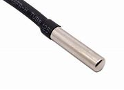

Dallas DS18B20 Thermometer© 2018, ProtoIt Platform: RASPBERRY |  |
Beschrijving:
De Dallas DS18B20 temperatuursensor maakt gebruik van 'one-wire'-techniek.
Er is maar één gpio-pin nodig om de sensor aan te sluiten.
Standaard is dit gpio-4. One-wire moet wel in de Raspberry configuratie worden aangezet.
Let op, dat je bij het aansluiten van de sensor niet vergeet om een 4,7 kOhm weerstand tussen de datalijn en de 3,3 volt-lijn te solderen.
Onderdelen:
Thermometer
Instellingen:
| Sensornummer | Dit is het one-wire identificatienummer van de temperatuursensor. Als je maar één sensor aansluit, hoef je dit nummer niet in te vullen. Dan wordt de sensor automatisch gevonden. |
| Koud (°C) | Het signaal Koud wordt uitgezonden bij een temperatuur lager dan hier ingesteld. Standaard op 15 °C ingesteld. |
| Warm (°C) | Het signaal Warm wordt uitgezonden bij een temperatuur lager dan hier ingesteld. Standaard op 35 °C ingesteld. |
| Temperatuur (°C) | De gemeten temperatuur in graden Celius. |
| Temperatuur (°F) | De gemeten temperatuur in graden Fahrenheit. |
| Temperatuur (K) | De gemeten temperatuur in Kelvin. |
| Vorst | Dit signaal wordt uitgezonden bij temperaturen lager dan 0 °C. |
| Koud | Dit signaal wordt uitgezonden als de temperatuur lager is dan het niveau van de Instellingen. |
| Normaal | Dit signaal wordt uitgezonden als de temperatuur zich tussen Koud en Warm bevindt. |
| Warm | Dit signaal wordt uitgezonden als de temperatuur hoger is dan het niveau van de Instellingen. |